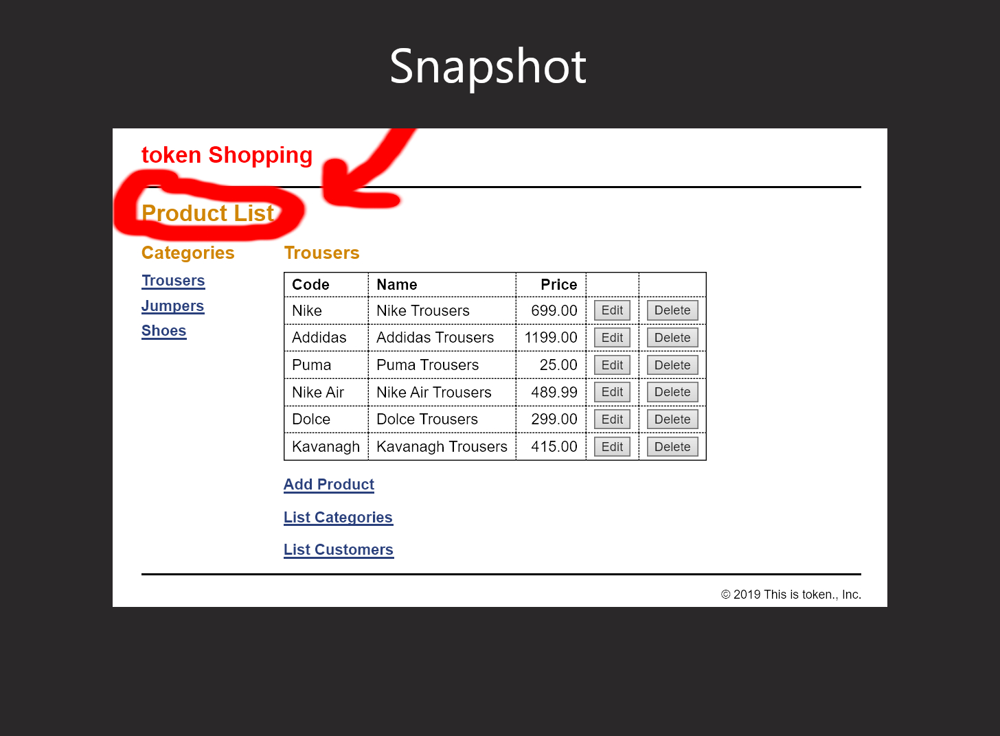
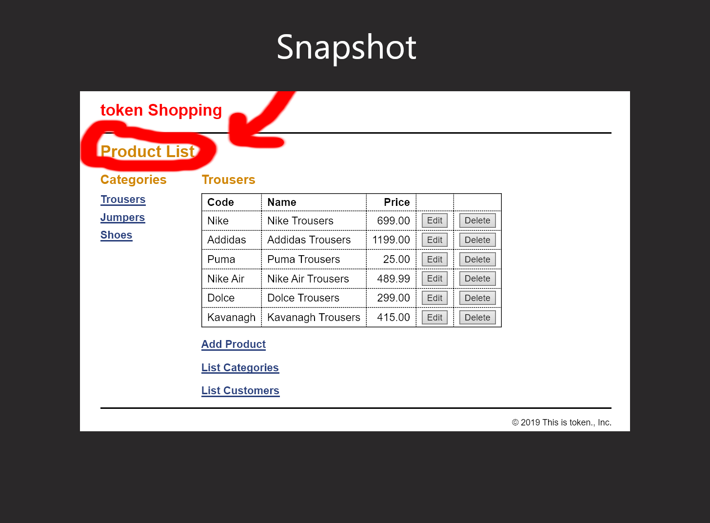

This is one of my 2nd year Web Programming Project.
This is a Model View Controller(MVC) Project. If you are not familiar abour MVC visit this link: https://www.youtube.com/watch?v=1IsL6g2ixak&feature=youtu.be
 This is a snapshot of the token Shopping website you are greeted with this when you enter the product manager option in the index

This is a snapshot of the token Shopping website you are greeted with this when you enter the product manager option in the index

This is the model that will deal with the data being retrieved from the database "shop" from the database called shops, the model is responsible for most of this hence having the most sql queries inside. Below is an example of the customer database and category database connecting to the shop database, make sure you have something like this in tour model folder.
The database.php file is very important, without it you have no database connectivity!
Installations: XAMPP(Windows 10): https://www.apachefriends.org/download.html MAMPP
Refrence Refrence: Murachs Chapter 5 MVC Code.
THANKS FOR INSTALLING!